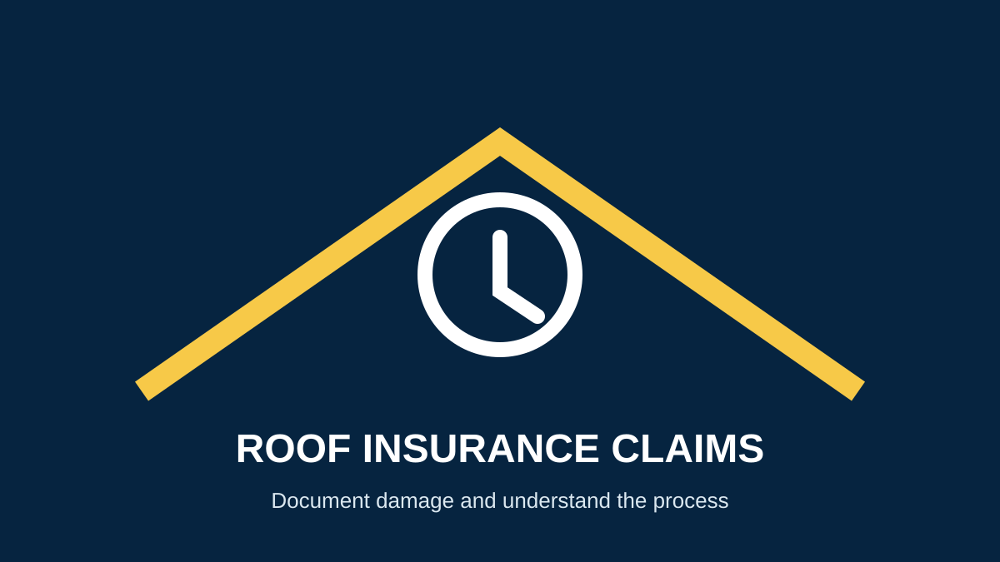

How to Handle a Roof Insurance Claim in Miami
If you are searching for Miami roof insurance claims, start with safety and documentation. Insurance coverage depends on the policy, cause of loss, exclusions and facts of the claim, so a roofing contractor should not promise that a claim will be approved.
What to do after roof damage
- Make the property safe: follow emergency guidance and avoid unsafe roof areas.
- Document the condition: take photos and video from safe locations before cleanup when practical.
- Prevent additional damage: use reasonable temporary measures when safe and keep receipts for related work.
- Notify your insurer: give notice according to your policy and ask what documentation is required.
- Arrange a professional inspection: a roofer can document visible roofing conditions and identify repair or replacement needs.
What should you document?
Record the date and apparent cause of the damage, affected rooms, ceiling or wall staining, damaged roofing materials and any temporary mitigation. Keep estimates, invoices, photographs and correspondence organized.
Florida insurance resources
For current consumer information, use the Florida Department of Financial Services insurance resources and the Florida Office of Insurance Regulation. Policy deadlines and claim rules can change, so verify current requirements with your insurer or qualified Florida insurance professional.
What a roofer can—and cannot—do
A contractor can inspect the roof, document visible damage, explain repair or replacement scope and provide an estimate. Hyper Roof does not determine insurance coverage, interpret your policy as legal advice or guarantee claim approval.
For the physical roof problem, see our Miami roof inspection, storm damage repair and roof repair services.
Frequently asked questions
Does homeowners insurance cover a roof leak?
It depends on the policy, cause of loss, age and condition of the roof and applicable exclusions. Ask your insurer for a coverage decision.
Should I repair the roof before an adjuster visits?
Take reasonable steps to prevent further damage when safe, but document the condition and keep records of emergency work.
Can a roofing company guarantee my insurance claim?
No. Coverage and claim decisions belong to the insurer under the applicable policy and law.
Request a Roof Inspection →Sources
- Florida Department of Financial Services — Insurance Consumer Resources
- Florida Office of Insurance Regulation
- National Association of Insurance Commissioners
Related guides
Hurricane roof damage · Roof replacement · Signs you need a new roof